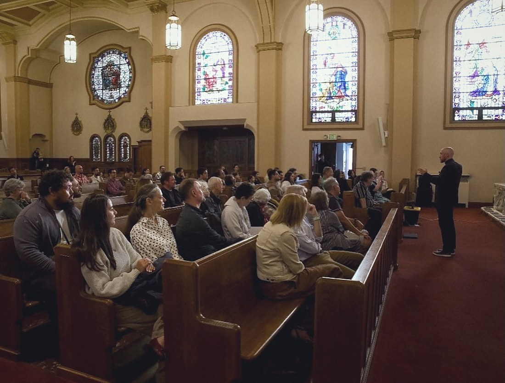
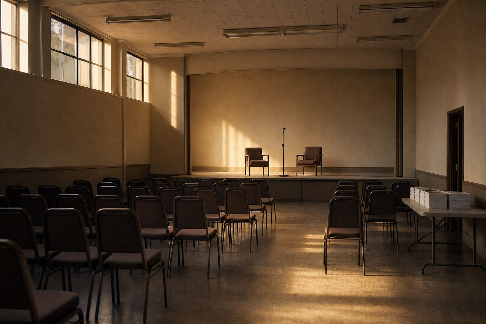
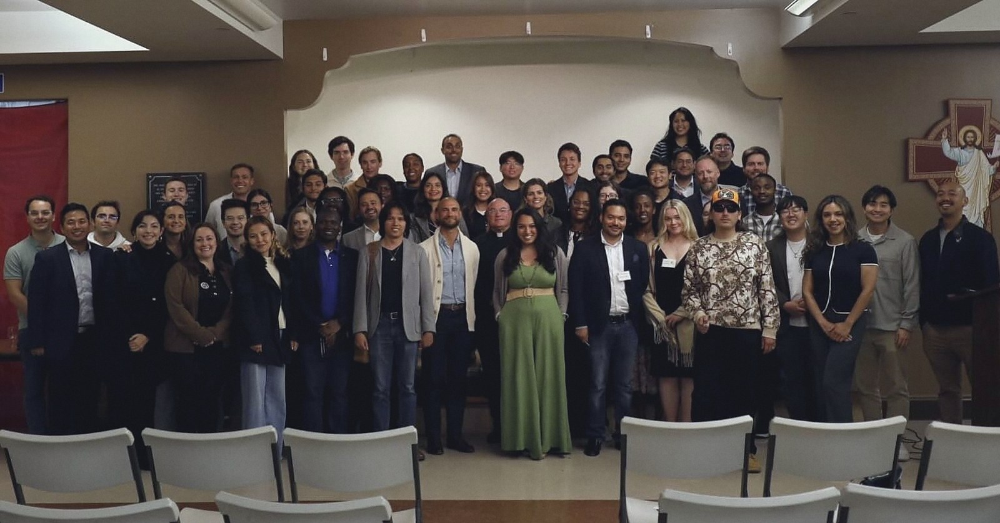
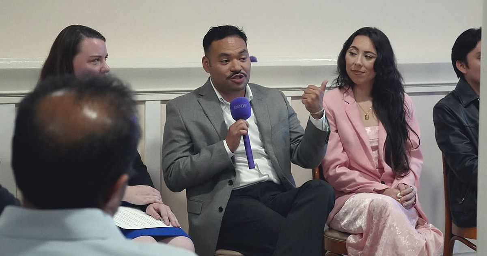
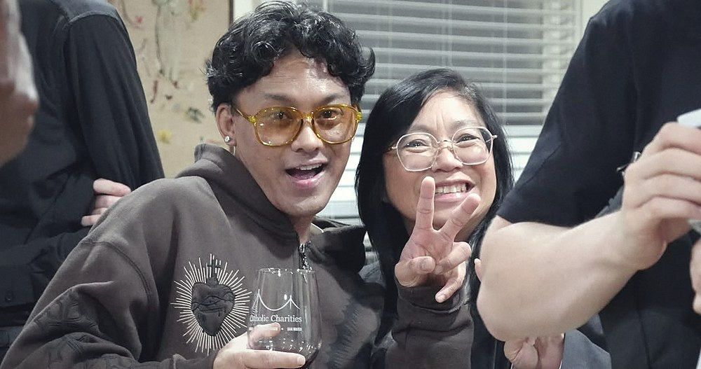
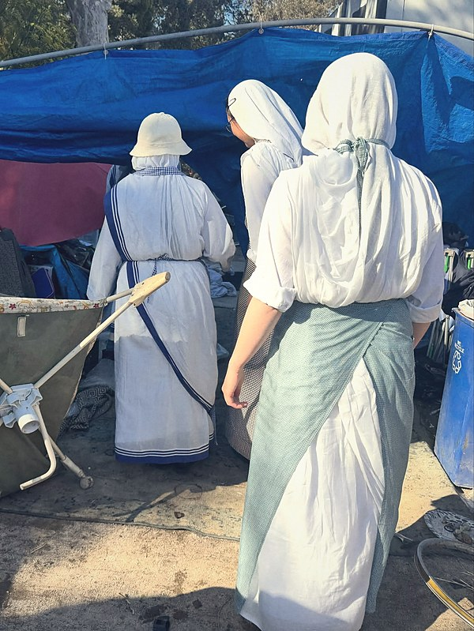
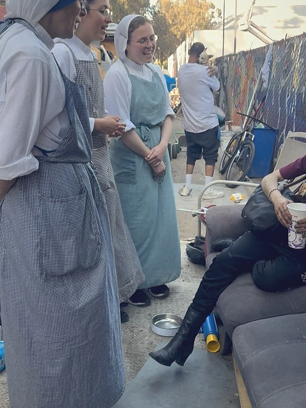
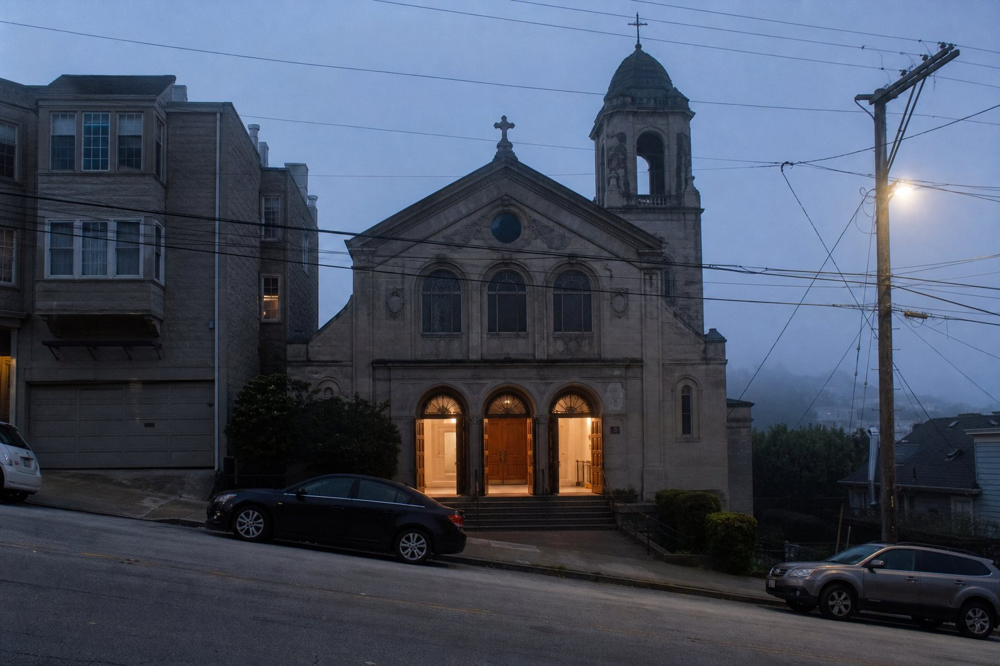

01
Called to Lead
A discussion on Catholic social teaching

San Francisco · Ages 21 to 40
A monthly evening series on Catholic social teaching, run with the Archdiocese of San Francisco. Keynote, panel, reception. All three so far have sold out.
Speakers and co-sponsors have come from
What it is
It is an evening series on Catholic social teaching, run with the Archdiocese of San Francisco. A keynote from someone who does the work for a living, a panel, and a reception where you can actually talk to them.
Doors at 6:30. Out by 9. Ages 21 to 40, business casual, in a parish hall somewhere in the city.
In their own words: a collective formed in partnership with the Archdiocese of San Francisco, dedicated to connecting and equipping Catholics who desire to lead with conviction, excellence, and faith in everyday life.

The record
Their own posters, with the speakers who showed up and the churches that hosted them.
01
A discussion on Catholic social teaching

02
Advancing the common good

03
Option for the poor and vulnerable
Every generationinherits a culture.Few choose to shape it.
Catholic Leaders in Action, on their own event page
The room
A parish hall on a weeknight in San Francisco. Business casual, ages 21 to 40, and a reception that runs until they turn the lights on.




Beyond the talk
On 3 August a group went out with the Missionaries of Charity for homeless ministry across San Francisco. No talk, no panel, no name tags.
Blessed to have been invited to join the Missionaries of Charity for homeless ministry throughout San Francisco.
Catholic Leaders in Action, 3 August 2026




On the record
Quoted by the Archdiocese of San Francisco, July 2026.
They are just humans who are deciding to say yes despite their fear. God had a call for them and they were stepping up into it.
I think we're in a time where a lot of young adults are on fire for their faith, but there's a disconnect because many don't know how to unite or move something forward.
Kudos to the young adults who started a new Catholic Leaders in Action young adults group and launched a monthly Catholic Social Teaching series in Noe Valley this week. These are dynamic folks!
An evening
Ages 21 to 40. Business casual encouraged. Luma registration required for entry.
Next evening
The Eucharistic necessity of your royal priesthood
By baptism you share in Christ's royal priesthood. An evening on what that means in practice: how the work of your hands is carried to the altar, how your particular mission is discerned, and what the Church can accomplish in no other way than through you.
RSVP on LumaCo-founded the Catherine of Siena Institute. President of the Dominican School of Philosophy & Theology from 2004 to 2015.
Executive Director of the Lay Mission Institute. Appeared on NBC's American Ninja Warrior across more than forty episodes as the "Papal Ninja".
Lately
Posters, rooms and recaps, posted as they happen.
@catholicleadersinactionQuestions
Catholics aged 21 to 40 across the Bay Area. All are welcome at the events.
No. The evenings are built for Catholics who want to lead with their faith, and anyone can attend.
Business casual.
Parish halls and churches around San Francisco. St Philip on Diamond Street, St. James and St. Paul's have all hosted. Each event's Luma page lists the address and directions.
Yes. Luma registration is required for entry, and it is free.
Leave your number at the top of this page, or follow @catholicleadersinaction.

Leave your number. We text you the date, the church and the speaker, and nothing else.